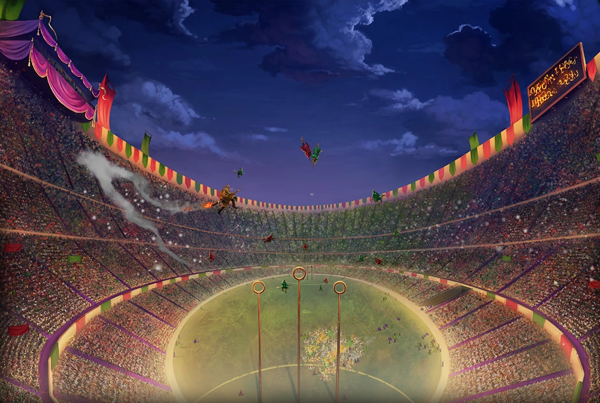

Квиддич — сердце спортивной жизни школы. Каждый год четыре факультета сражаются за заветный золотой кубок.

Каждый из факультетов имют свои сильные стороны, отличные от других:
Гриффиндор: Дерзость и атакующий стиль.
Слизерин: Хитрость, мощные загонщики и лучшие мётлы.
Когтевран: Математический расчет траекторий и высокая скорость.
Пуффендуй: Железная дисциплина и честная игра.
Расписание матчей на текущий триместр
Октябрь: Гриффиндор vs Слизерин (Открытие сезона).
Декабрь: Когтевран vs Пуффендуй (Зимнее дерби).
Март: Плей-офф за выход в финал.
Май: Финал Кубка школы.
Объявления для студентов
Отбор в сборные: Пробы пройдут на второй неделе сентября. Приходить со своей метлой (школьные «Метеоры» выдаются только новичкам). Запрет: Использование заклинаний «Конфундус» и «Империус» на игроках карается исключением. Билеты: Студенты 1-го курса могут получить пропуски на трибуны у своих старост.